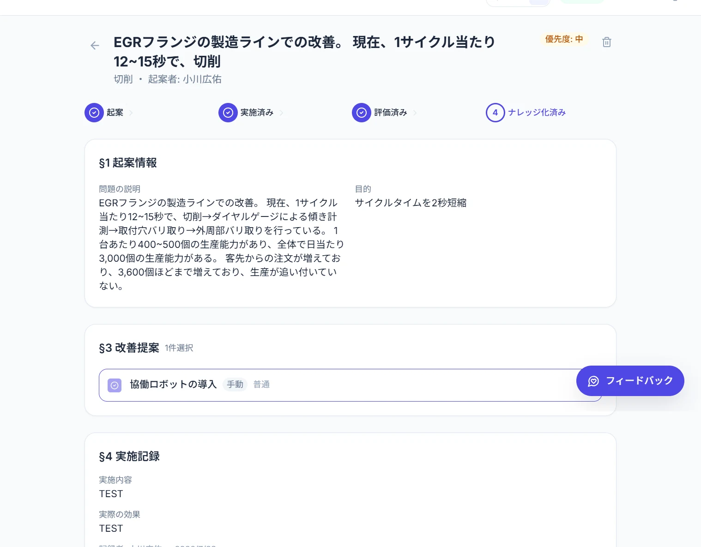

起案
改善したい工程の課題・目的を登録。
「どこに困っているか」「何を良くしたいか」を残し、改善活動の出発点を共有します。
FEATURE 02 · カイゼン
起案から効果評価まで、一連の過程を残す。
現場で生まれた改善を、別の拠点でも参照できる
会社の資産にします。

IMPROVEMENT CYCLE
その場だけの改善を、
次の現場で使える知識へ。
起案
「どこに困っているか」「何を良くしたいか」を残し、改善活動の出発点を共有します。
可視化
AIが標準作業組合せ表・標準作業表を生成。工程を整理し、改善を検討する手がかりにします。
改善案
作業の内容を踏まえて改善案を検討。現場で考えた改善案を手動で入力することもできます。
評価・蓄積
改善案と評価をまとめてナレッジ化。別の拠点からも参照し、良い改善を広げられます。
EXPECTED BENEFITS
過去の課題と改善案、評価をまとめて参照。蓄積した知見を、次の改善の出発点にします。
他のライン・別の拠点からも改善ナレッジを参照。現場ごとの工夫を会社全体で活かします。
カイゼン機能は、現場の声を伺いながら現在も磨き続けている発展中の機能です。
お使いいただく中でのお気づきを、機能強化に反映していきます。
FEATURE COMPARISON
動画マニュアルとカイゼンは、セットでご利用いただけます。
| 主な用途・機能 | 動画マニュアル | カイゼン |
|---|---|---|
| AIによる生成 | 作業手順・字幕 | 標準作業組合せ表・標準作業表、改善案 |
| 確認・編集 | 手順・字幕の手動編集、警告マーク | 改善案の手動入力 |
| QRコードで配布 | 対応 | — |
| 視聴・完了状況の管理 | 対応 | — |
| 効果評価・ナレッジ蓄積 | — | 対応 |
| 情報の展開 | ユーザーを指定してマニュアルを展開 | 別拠点で改善ナレッジを参照 |
無料トライアルやデモのご依頼、導入のご相談を承ります。